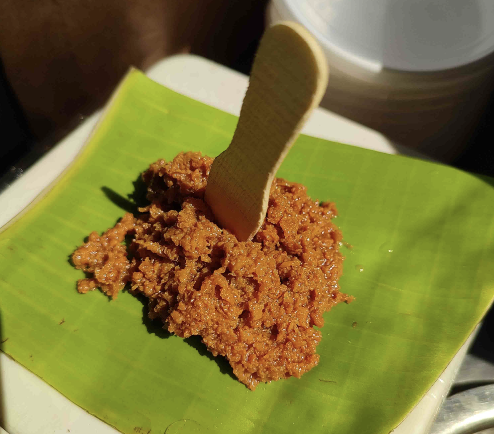

Cycle Kova

Description
With more than 70 year of history, Ballari cycle kova has lovers across the
state. People don't need an occasion to savour this delicious sweet.
Ingredients
- 1.5 litre Full fat milk
- Sugar as per taste
Steps
- Pour milk in a large, thick-bottomed pan and place the pan on the stove top.
- Bring milk to a gentle boil on a low to medium heat.
- Then lower the heat and simmer the milk. Stir at intervals whilst the milk is simmering.
- Add sugar as per taste
- Once the milk begins to froth, delicately stir it using a spatula to enhance the creamy texture.
- After 2 hours of heating, stir continuously when you see bubbles bursting in the reduced and condensed milk.
- When you see no bubbles bursting, it's time to turn off the heat. Collect your kova in a bowl.